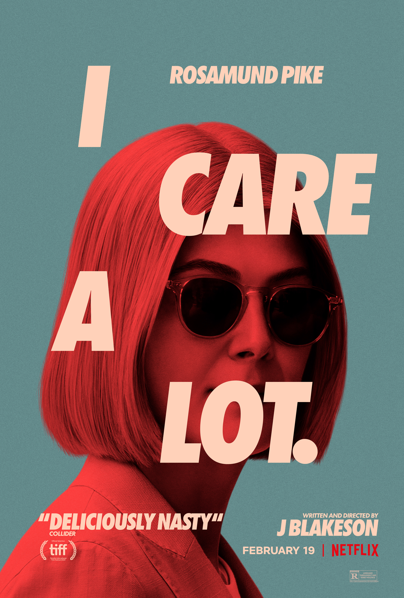

I Care A Lot
2/10
This movie is homophobic. *Cracks knuckles.* Let’s take a deep dive into this movie. First, the actresses are not gay. Roseamund Pike is married to some crusty white dude. Also, who let her have that haircut. It especially looks bad next to Eiza Gonzalez’s hair because she has some luscious locks. I’m not saying that this person should lose their job, but I’m not sure if that mistake is forgivable. I digress, I’m FUCKING SICK of straight actors playing gay characters! Cast a globdamn gay actor! It would make the movie so much better. This movie queerbaited me. All we get from this movie is one good kiss scene that’s over in 30 seconds. Not even a sex scene. Bullshit! The plot for this movie was simply not good. Both Marla and Fran are bad people doing bad people stuff. Then, of course, there’s not a happy ending. I shouldn’t be surprised by how bad this movie is. J Blakeson deserves to go fuck himself. We’re all thinking it, you’re welcome for being the one to write it.